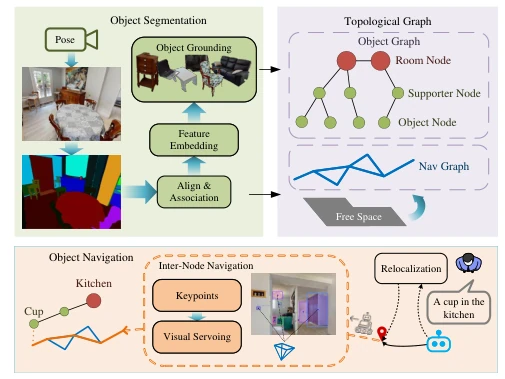
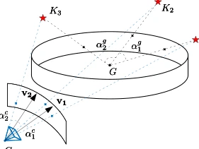
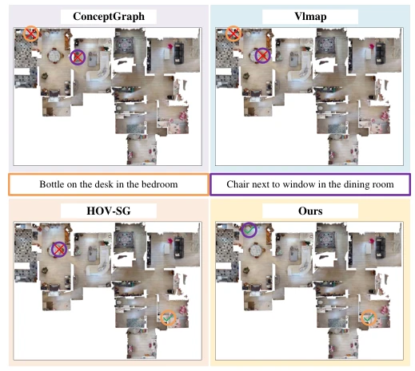
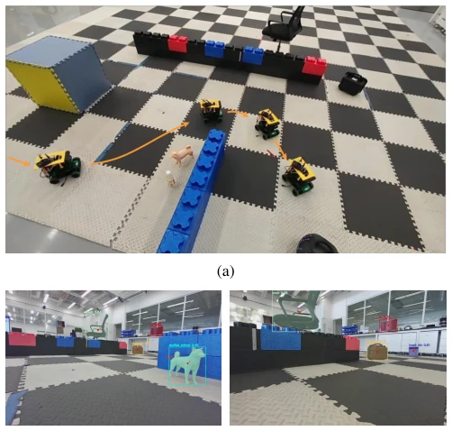

This paper attempts to combine "understanding" and "moving correctly" into one using a graph structure; the idea is quite elegant. It constructed an Object-Path Graph, linking semantics and topology, indeed saving the trouble of dense maps. But do not get too excited, its inter-node navigation relies entirely on visual servoing to align angle differences; this mechanism tends to fail when lighting changes or features are blurry. Moreover, the path is traversed by jumping points, without optimization in between; estimated that the robot moves like Parkinson's, jerky with stops and starts. Real-robot experiments were indeed conducted, but dynamic environments were not mentioned in simulation; this might not be sufficient for actual homes. Overall, it is a decent attempt at topological navigation, but still far from robust deployment. Although it achieved open-vocabulary navigation, it overly relies on visual feature matching; once the environment texture is uniform, visual servoing may fail. Additionally, inter-node path planning lacks global smoothing optimization, leading to slightly lower trajectory efficiency and higher PLR values.
VLN tasks require robots to understand both language and space. Existing methods mainly have two schools: one is sequence decision [5][6], like taking a step and looking, prone to error accumulation over long distances; the other relies on dense maps [9][11], with high computational cost and difficult generalization. Scene Graph methods [7][10] although store semantics, navigation still relies on metric localization, semantics and motion are disconnected. The motivation of this paper is to fill this gap, using a lightweight topology graph for direct navigation, without reconstructing dense maps, while supporting open-vocabulary understanding. It aims to solve the problem that existing scene graphs are only used for high-level reasoning and cannot directly guide low-level motion, achieving the unification of semantics and topology. Especially targeting the problems of error accumulation and redundant exploration in long-distance navigation, it proposes a topology scheme without dense reconstruction.

Fig. 2: Overview of the proposed framework. The pipeline consists of four key components: Open-Vocabulary Semantic Segmentation for extracting object-level observations from RGB-D inputs, Object Scene Graph construction for encod- ing objects and their semantic relations, Traversability Navi- gation Graph for modeling navigable free-space connectivity, and Topological Navigation for performing goal-driven inter- node navigation using the constructed object–path graph representation.
方法Method
整体分四步。首先 Open-Vocabulary Mapping，用 SAM 分割，CLIP 特征融合，LLM 生成描述。其次 Object Scene Graph，分房间、支撑物、普通物体，LLM 推理关系。第三 Traversability Navigation Graph，按视角变化建节点，自由空间连边。最后 Topological Navigation，先通过语义全景描述定位起点，再规划路径。核心创新是 Inter-node Navigation，不用里程计，而是用视觉伺服对齐当前视角和目标节点快照的物体角差，通过最小化相对角度误差生成速度指令。具体而言，控制器计算当前与目标关键点的相对角度残差，加权后映射为速度命令，实现无里程计的节点间过渡。这种方法避免了复杂的 3D 重建，但依赖稳定的视觉特征。
Overall divided into four steps. First Open-Vocabulary Mapping, using SAM segmentation, CLIP feature fusion, LLM generating descriptions. Second Object Scene Graph, divided into rooms, supports, ordinary objects, LLM inferring relations. Third Traversability Navigation Graph, building nodes according to viewpoint changes, connecting edges for free space. Finally Topological Navigation, first locating the start point through semantic panorama description, then planning the path. The core innovation is Inter-node Navigation, not using odometry, but using visual servoing to align the object angle difference between the current viewpoint and the target node snapshot, generating velocity commands by minimizing relative angle error. Specifically, the controller calculates the relative angle residual between current and target keypoints, weighted and mapped to velocity commands, achieving inter-node transition without odometry. This method avoids complex 3D reconstruction, but relies on stable visual features.

Fig. 3: The robot at current position C observes a panoramic representation at the goal point G, from which keypoints Ki are detected. The control objective is to compute a motion command that aligns the robot toward the goal configura- tion by minimizing the angular and geometric discrepancy between the current observation and the goal-view keypoint structure.

Fig. 4: By jointly leveraging object–relation structure and room identification, our method achieves more accurate instance-level retrieval compared to competing approaches.
Tested on HM3D and Replica datasets. Baselines include ConceptGraphs [9], VLMaps [11], HOV-SG [10]. Metrics look at SR, SPL, NSR. In results, this paper is superior to baselines in open-vocabulary retrieval, SPL is highest. Node retrieval recall is also good. Ablation experiments show room structure and support hierarchy have large impact on performance. Real-robot experiments verified strategy transferability, but path length ratio is slightly higher, indicating inter-node transition is not smooth enough. Experiments show that increasing the number of objects in snapshots can significantly reduce translation error, but too narrow field of view leads to insufficient correspondence. Overall proves the feasibility of topological navigation, but performance in dynamic environments still needs verification.

Fig. 6: Real-world validation of topological edge navigation. After establishing the topological path to the target object, the robot traverses graph edges by aligning current obser- vations with the stored semantic representation of the next navigation node. (a) Navigation path between consecutive nodes. (b) Current observation. (c) Observation at reaching point, where the observation aligns with the stored node snapshot